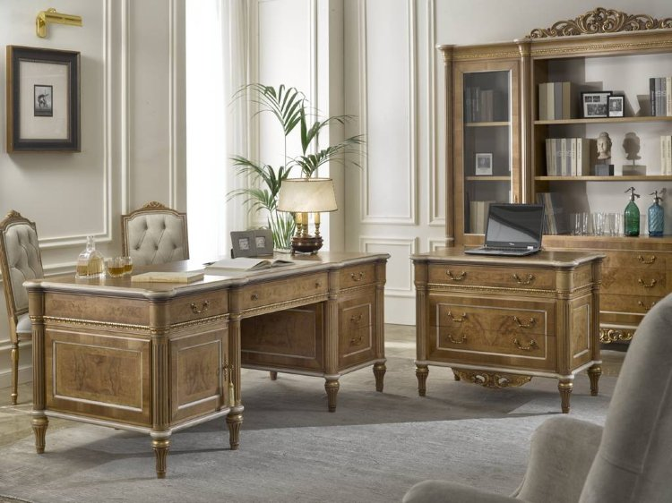
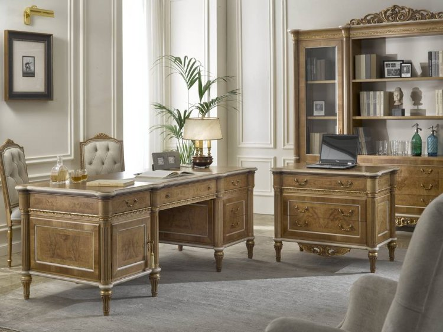

Галлерея
 

О предприятии
Древесина - это такой материал, который всегда умел вдохновлять людей, умеющих работать руками, и продолжает это делать.
В этой подборке мы собрали направления для бизнеса на изделиях из дерева.
Бизнес на производстве деревянных изделий сложно назвать простым. Для успеха в нем сегодня даже в формате небольшой столярной мастерской нужно сочетание сразу нескольких факторов - это высокое мастерство, производительность, умение красиво продавать свои творения и желание тратить на все помимо денег другой ценный ресурс - время. В условиях конкуренции с бездонным рынком Китая и развитием гипермаркетов, для выживания просто необходима специализация и своя уникальная нишевая продукция, в которой вам захочется расти и развиваться. В этой подборке мы предложим несколько таких направлений. Начать пробовать свои силы во многих из них можно практически сразу же, без наличия профессиональных инструментов и площадей
Наши услуги
Изготовление предметов декора
от 1999₽Реставрация или изготовление антикварной мебели
от 3999₽Индивидуальные заказы
от 2999₽Процесс производства
Раскроечный цех,сборочный цех
Раскрой древесных материалов (пиломатериалов, фанеры, столярных, древесностружечных и древесноволокнистых плит) на заготовки— одна из первых стадий технологического процесса деревообрабатывающего производства. Древесные материалы на крупных предприятиях раскраивают в раскройных цехах. На средних и небольших предприятиях раскройный участок (отделение) входит в состав укрупненного деревообрабатывающего цеха. Понятие о заготовках. Заготовками называют отрезки древесных материалов определенных размеров и формы, из которых при дальнейшей механической обработке получают детали. Заготовки, получаемые в раскройном цехе при раскрое материала пилами, будут называться черновыми заготовками. По размерам черновые заготовки могут быть одинарными и кратными. Одинарная заготовка имеет размеры, позволяющие получить из нее только одну деталь. Из’кратной заготовки можно получить несколько деталей по толщине, ширине или длине. Размеры черновой заготовки, даже одинарной, всегда больше размеров детали. Разность между размерами заготовки и размерами получаемой из нее детали называется припуском заготовки на обработку. Необходимость припуска объясняется тем, что при изготовлении детали из заготовки при механической обработке часть материала будет удалена.
Покрасочный цех
Многие специалисты рекомендуют наносить перед покраской слой грунта. Делается это для улучшения эксплуатационных свойств дерева. Грунтовка для дерева выпускается в жидком виде и после использования образует на поверхности прозрачную, малозаметную пленку, улучшающую сцепление краски с деревом. Это позволяет сэкономить на лакокрасочных материалах, так как поверхность, обработанная грунтом, не так интенсивно впитывает краску. Предварительные работы по подготовке завершены, можно приступать к покраске. В зависимости от ваших предпочтений и желаемого результата, могут использоваться средства как для выделения структуры древесины лессирующие составы, так и скрывающие ее, т.е. укрывные составы. К последним относятся различные непрозрачные краски.